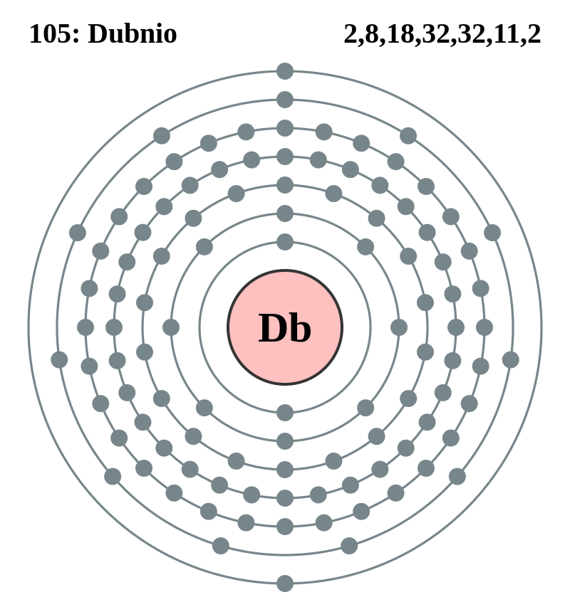

|
|
||
|
Dubnio A partir de octubre de 1971, se sintetizaron dos nuevos isótopos utilizando el acelerador lineal de iones pesados en Berkeley, California. Se han reconocido hasta la fecha siete isótopos de dubnio. En teoría, el dubnio es un metal de transición del grupo cinco y comparte muchas propiedades químicas con estos elementos. Sin embargo, los experimentos químicos de soluciones revelan que puede comportarse inesperadamente de forma más similar al niobio que al tántalo. |
 |
DATOS Número Atómico: 105 Peso Atómico: 268 Electronegatividad: Configuración Electrónica: [Rn]5f146d37s2 Estados de Oxidación: N/A No. de Electrones de Valencia: 5 |